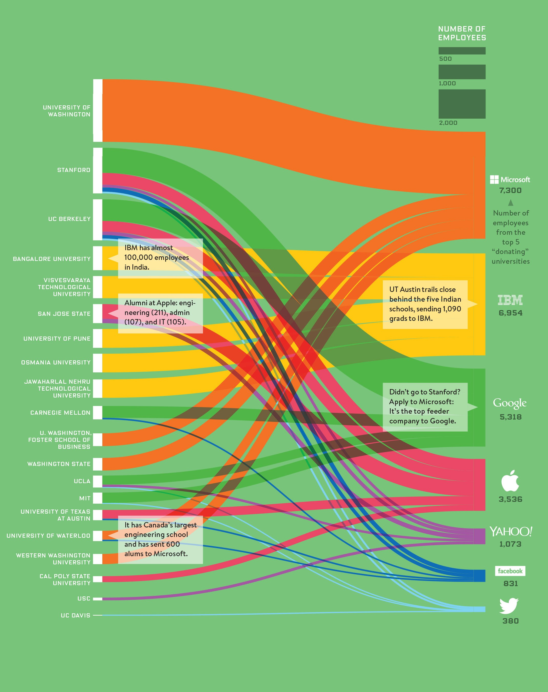

Data visualization is one of the most delightful trends in media. It’s perfect for skimming and can turn a boring economic analysis into a work of art. Many practitioners are looking for inspiration in this quickly evolving field. A (relatively) new Reddit, DataIsBeautiful, aims to collect the best of the Web in a daily rounded up of gorgeous data visualizations.
Lately, this Reddit community has really picked up steam and is unearthing the best ways to visualization thought-provoking and topical stories.
This smoke trail of ship-log entries from the 18th and 19th century is a wonderful retelling of history through exploration. Notice the super-dark band between western Europe and New York, in what would become a pre-cursor to the transfer of power from Britain to the United States.
Wired has a nice flow graph of how local universities feed the nation’s top technology companies. University of Washington provides an enormous chunk to Microsoft, while Stanford feeds straight into Bay Area neighbor Google.
For more inspirations, check out DataIsBeautiful here.
Source